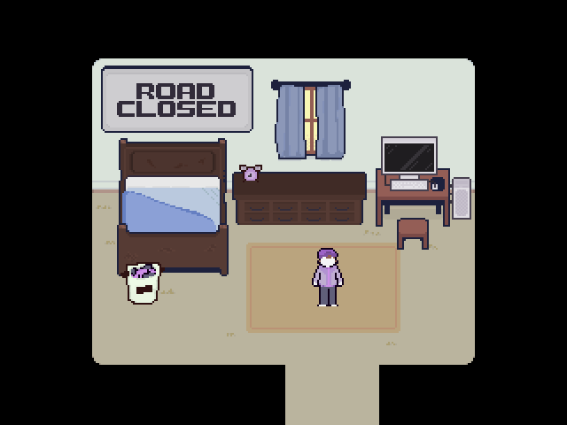
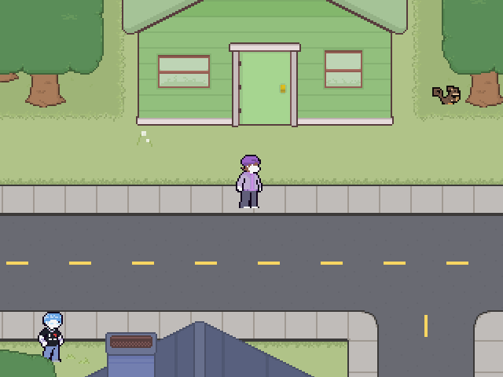
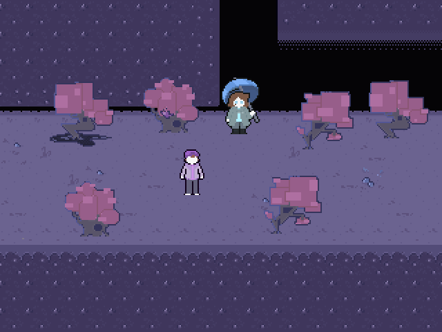

Game Info: |

What's that fine game of Nil's?Nil's Fine Game is an action-RPG developed by tayN. It revolves around a mentally ill teenager named PEDRO RICHARD PETERS and him learning how to communicate. Oh, and reclaim the position of a god. The game includes mental apparitions (She), umbrella women, communication and more! Or maybe not communication, if you're that kind of person. But before you can do any of that, you got a chore to do. The game's still in development, but it has become one of my favourites after playing the demo. It's charming, funny, a bit pessimistic and kind of cute. tayN and his team have done a great job making this game the best it can be. If you're a fan of games like "Earthbound", "Chrono Trigger" or heck even "LISA", this game might be up your alley.  RELEVANT HYPERLINKS |